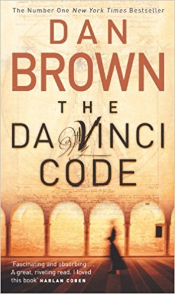
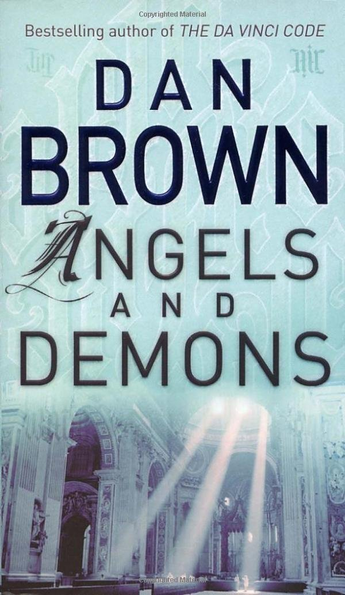
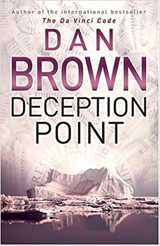
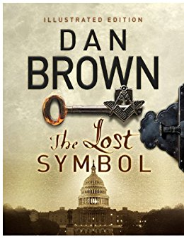
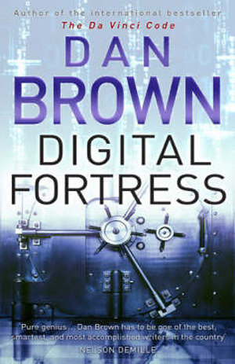
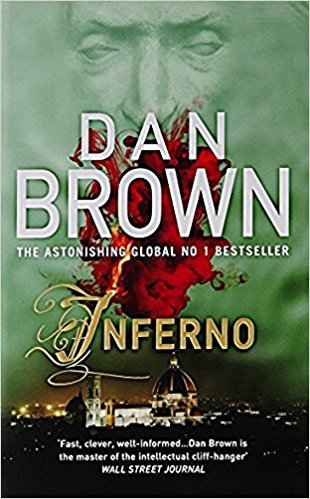
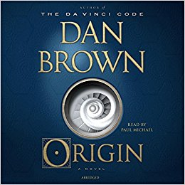

Dan Brown
|  | The Da Vinci Code is a 2003 mystery thriller novel by Dan Brown. It follows "symbologist" Robert Langdon and cryptologist Sophie Neveu after a murder in the Louvre Museum in Paris causes them to become involved in a battle between the Priory of Sion and Opus Dei over the possibility of Jesus Christ having been a companion to Mary Magdalene. |
|  |
Angels & Demons is a 2000 bestselling mystery-thriller novel written by American author Dan Brown and published by Pocket Books and then by Corgi Books. The novel introduces the character Robert Langdon, who recurs as the protagonist of Brown's subsequent novels. Angels & Demons shares many stylistic literary elements with its sequels, such as conspiracies of secret societies, a single-day time frame, and the Catholic Church. Ancient history, architecture, and symbology are also heavily referenced throughout the book. A film adaptation was released on May 15, 2009. |
|  |
The novel introduces the character Robert Langdon, who recurs as the protagonist of Brown's subsequent novels. Angels & Demons shares many stylistic literary elements with its sequels, such as conspiracies of secret societies, a single-day time frame, and the Catholic Church. Ancient history, architecture, and symbology are also heavily referenced throughout the book. A film adaptation was released on May 15, 2009. |
|  |
The Lost Symbol is a 2009 novel written by American writer Dan Brown. It is a thriller set in Washington, D.C., after the events of The Da Vinci Code, and relies on Freemasonry for both its recurring theme and its major characters. |
|  |
Digital Fortress is a techno-thriller novel written by American author Dan Brown and published in 1998 by St. Martin's Press. The book explores the theme of government surveillance of electronically stored information on the private lives of citizens, and the possible civil liberties and ethical implications of using such technology. |
|  |
Inferno is a 2013 mystery thriller novel by American author Dan Brown and the fourth book in his Robert Langdon series, following Angels & Demons, The Da Vinci Code and The Lost Symbol. The book was published on May 14, 2013, ten years after publication of The Da Vinci Code (2003), by Doubleday. It was number one on the New York Times Best Seller list for hardcover fiction and Combined Print & E-book fiction for the first eleven weeks of its release, and also remained on the list of E-book fiction for the first seventeen weeks of its release. A film adaptation was released in the United States on October 28, 2016. |
|  |
Origin is a 2017 mystery thriller novel by American author Dan Brown and the fifth installment in his Robert Langdon series, following Angels & Demons, The Da Vinci Code, The Lost Symbol, and Inferno. The book was released on October 3, 2017 by Doubleday. |